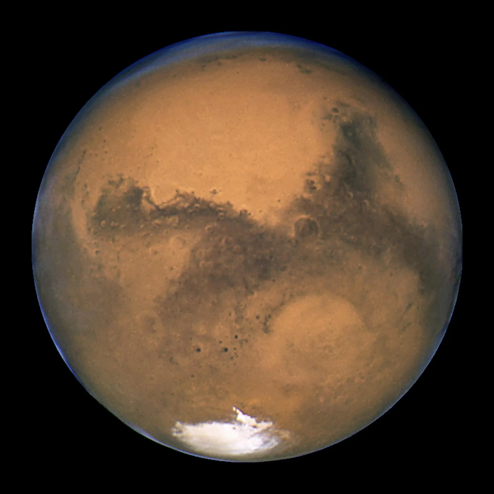
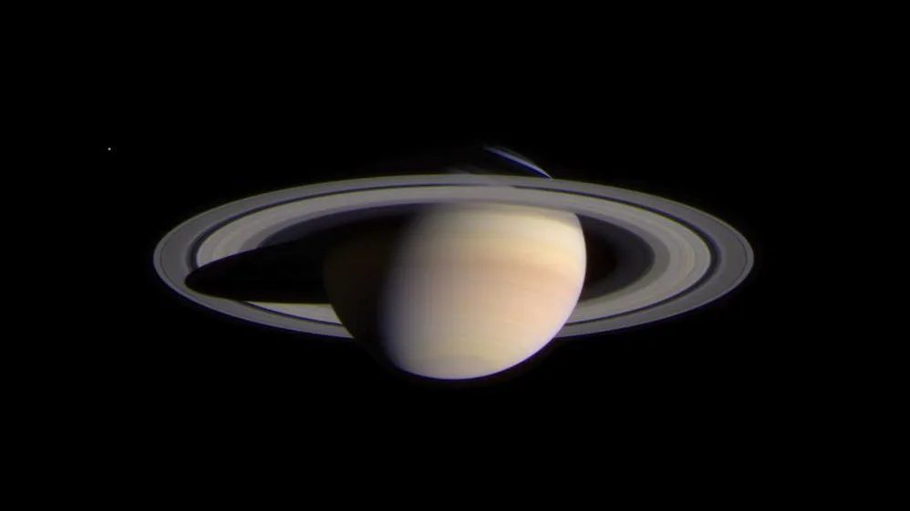
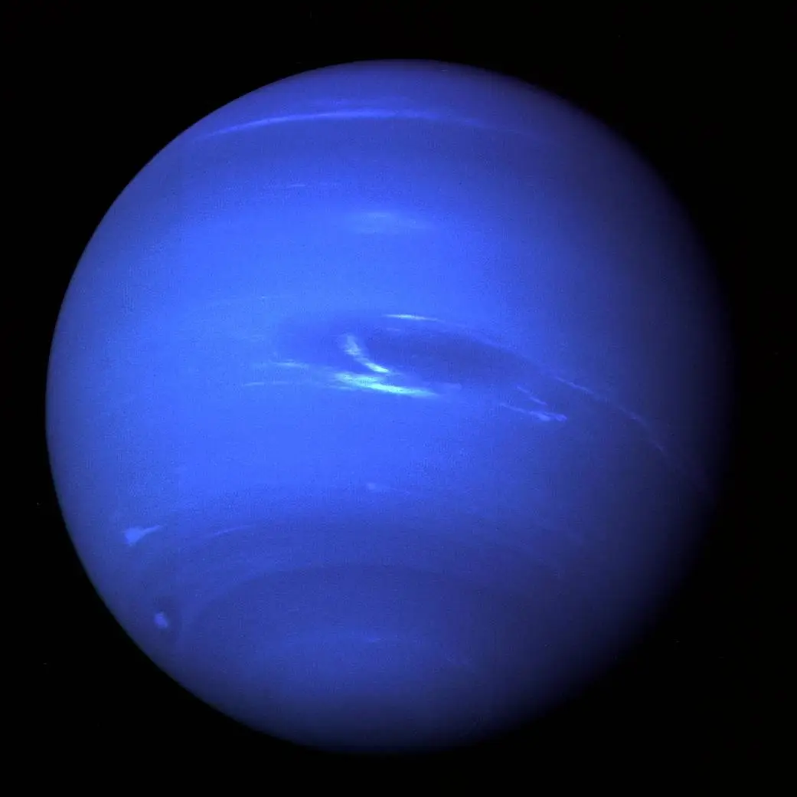

|
Earth |
Mars |
Saturn |
Neptune |
| Planet Images |
 |
 |
 |
 |
| Mean Tempature (C) for each planet |
Earth: 15 degree celsius |
Mars: -65 degree celsius |
Saturn: -140 degree celsius |
Neptune: -200 degree celsius |
| Density (kg/m3) for each planet |
Earth: 5514 (kg/m^3) |
Mars: 3934 (kg/m^3) |
Saturn: 687 (kg/m^3) |
Neptune: 1638 (kg/m^3) |
| Gravity (m/s2) for each planet |
Earth: 9.8 (m/s2) |
Mars: 3.7 (m/s2) |
Saturn: 9.0 (m/s2) |
Neptune: 11.0 (m/s2) |
| Length of Day (hours) for each planet |
Earth: 24.0 hours |
Mars: 24.7 hours |
Saturn: 10.7 hours |
Neptune: 16.1 hours |
| Orbital Period (days) for each planet |
Earth: 365.2 days |
Mars: 687.0 days |
Saturn: 10,747 days |
Neptune: 59,800 days |
| Number of Moons on each planet |
Earth: 1 moon |
Mars: 2 moons |
Saturn: 146 moons |
Neptune: 16 moons |
| Orbital Velocity (km/s) for each planet |
Earth: 29.8 (km/s) |
Mars: 24.1 (km/s) |
Saturn: 9.7 (km/s) |
Neptune: 5.4 (km/s) |